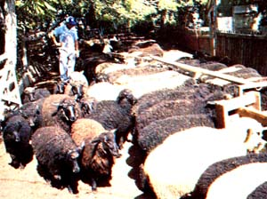
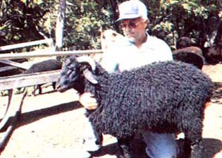

Baa, baa, black sheep, have you any wool?
Yes sir, yes sir, three bags full.
One for my master, one for my dame,
And one for the little boy who lives down the lane.
For 15 years now, Gary Jones of Peabody, Kansas and his wife Marilyn have worked hard to develop a strain of sheep that consistently produce high-quality black wool ... a product that's usually discarded by commercial buyers because it can't be dyed (in fact, a fleece with even a few strands of black is generally classed as less than desirable). Good-quality dark fleece is highly esteemed, however, by handspinners: crafts people who can turn naturally shaded brown, gray, and black wool into beautiful fabric or yarn creations.
Furthermore, in the eyes of these fiber artists, the key to value in wool of any color is its quality, and the production of top-grade fleece has been the primary objective of the Jones farm (see the accompanying sidebar for more information on measuring wool quality). In order to achieve this goal, Gary has incorporated as many as 25 different strains of sheep into his flock, crossbreeding to produce a lamb crop that's consistently 90-95% black.
There's no easy formula for success in such an undertaking, either. After all, different sheep have varying genetic capabilities for color: Some, like the blackfaced Hampshires and Suffolks, can be bred to produce all-black young after only one generation ... while others, such as the fine-wooled Merinos, rarely do. Unfortunately, those breeds that most easily revert to black also tend to produce poorerquality wool. Therefore, a stringent program of selective crossbreeding must be established to develop high-quality, all-black fleece.
The only true black sheep in the world (all others being genetic variants of some white-fleeced breed) is the Asian Karakul, which is the source of Persian lamb and broadtail pelts as well as of a coarse, rug-quality wool. Karakul rams will usually sire black lambs regardless of the color of the ewe ... but the rams' coarse fleece - which Gary describes as looking "like a hunk of bear fur lying on the floor" - is also passed on to the offspring. The breeder must therefore keep infusing the blood of one or another of the high-quality wool animals, such as the Merino or Border Leicester, into his already dark line of sheep.
If asked, Gary says, "I'll tell anyone the secret to creating a quality allblack flock." Grin wrinkles deepen around his eyes as he continues, "Just study your sheep and work hard on your breeding program for 15 years like I did."
Jones maintains a flock of 200 to 250 ewes, and uses 8 to 10 rams. His lamb crop averages 116% (1.16 lambs per ewe), and most of the little ones are as black as coal. Unlike many sheep farmers, Gary computes his production percentages on the basis of lambs that he actually weans. Many other breeders do this on the basis of births, not taking into account the considerable losses that can occur between birth and weaning.
Each year the Jones family puts six to eight lambs in the freezer. The balance of the annual crop is either kept as replacement stock, sold at livestock auctions, or marketed to other folks interested in starting black sheep flocks.
Direct sales of stock, wool, and meat are the major - but not the only - sources of the Jones farm's income. In addition, each June Marilyn runs two week-long handspinning classes, to teach folks how to clean, card, spin, and dye wool using many natural colorings found in the prairies nearby.
Of course, you might well want to know just how much one can expect to reap from a black sheep flock. Let's look at the wool sales first. In order to insure that ranchers get a fair return on their investment, the government has established a per-pound support - or incentive - price for wool. The actual selling figure may be anywhere from 28 cents to 40 cents lower than the support price, and the government will then pay the difference to the producers. The average selling price from 1979 to 1981 was 89.6 cents per pound, while the average support price during that period was $1.24 per pound. These figures, of course, refer to wool of average grade and cleanliness. Better-quality fleeces would bring in more money, and dirty, poor-quality wool would bring in less.
Knowing that, you may be surprised to learn that the Jones Sheep Farm sells its wool - black or white - for $2.50 per pound (plus shipping) to handspinners across the country, and thus far Gary has had no problem getting customers ... in fact, he usually has a waiting list!
A flock of medium-sized sheep will yield an average of six to ten pounds of fleece per mature animal annually. Gary figures that six to eight pounds of this will be the high-quality, $2.50-per-pound wool, the rest being what he calls "scrap" that might bring a price of about 60 cents per pound on the market.
Jones also cautions that wool alone - no matter how high its quality - won't bring in enough to keep anyone in the sheep business. "It used to be that you could figure your wool money would pay for the cost of keeping your animals," he says, "but with today's inflation rate, that's no longer true. You've got to consider wool as a secondary crop." He figures that the cost per ewe per year - an expense that includes pasture, hay, grain, veterinarian bills (some years these are as high as $600), ram replacement fees, and the purchase of other replacement stock - comes to about $65. Given that figure, a rancher would have to sell fleece for nearly $ 10 per pound to make any profit!
And since wool can't be the operation's sole source of income, there has to be a good return on the lamb crop to make a go of the sheep business ... and this is where Gary's long, hard work to develop a quality breeding program has paid off. He can sell his top-notch breeding stock (about half of each year's crop of lambs) to other ranchers for anywhere between $200 and $500 apiece. Gary and Marilyn travel to the East Coast each summer to sell the young animals, and there's always a steady stream of buyers and visitors stopping at their farm, as well.
Those lambs that don't muster up to breeder quality are sold at the market after the animals reach 80-100 pounds (usually at four to six months of age). The selling price of market lambs has been 50 cents-75 cents per pound for the past few years.
On an annual basis, the farm typically grosses about $20,000 from the lamb crop and $3,000 from the wool ... a fact that serves to further underscore the truth that a shepherd cannot live on fleece sales alone.
But though raising black sheep may not be a way to get rich quick, it's clear that producing high-quality dark fleece for sale to handspinners does add greatly to the profit potential of a flock. And with the return of interest in handwork in recent years, spinning-supply shops and weaving guilds or clubs are springing up everywhere ... producing a ready market for top-grade wool of any color!
EDITOR'S NOTE. For more information on raising sheep, see Randy Kidd's articles "Sheep Breeds" (MOTHER NO. 75, page 82) and "Ten Commandments for Raising Healthy Sheep" (MOTHER NO. 60, page 162). Turn to page 148 to order back issues.
--JUDGING WOOL QUALITY--
|
 It takes many breeds of sheep, both black and white, to create a top-quality line of black wool-bearers. Here's a part of the Jones flock at chow time. |
 Gary displays a fine specimen. |
|